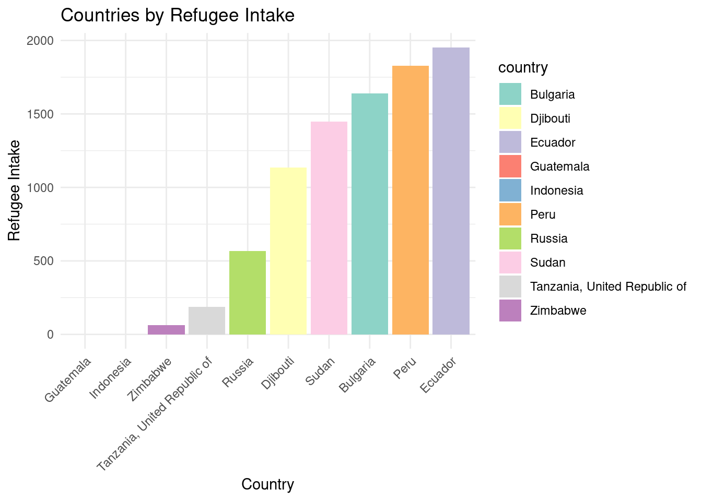
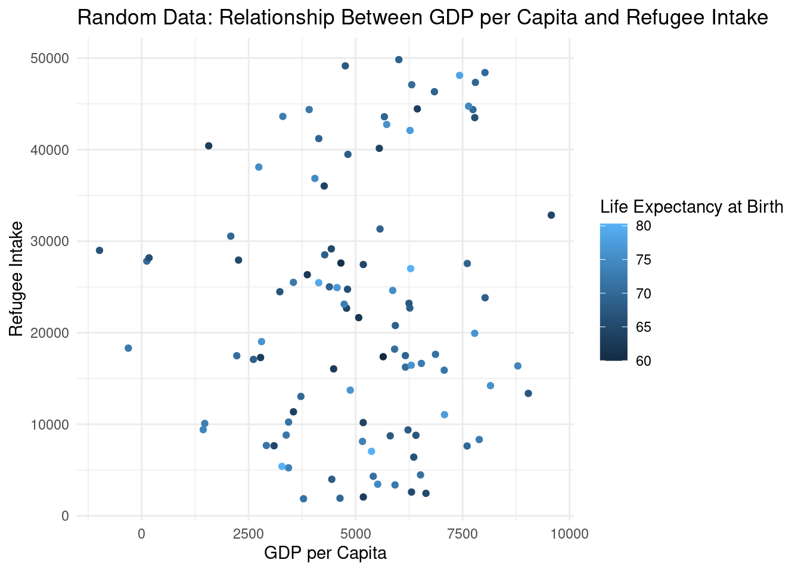
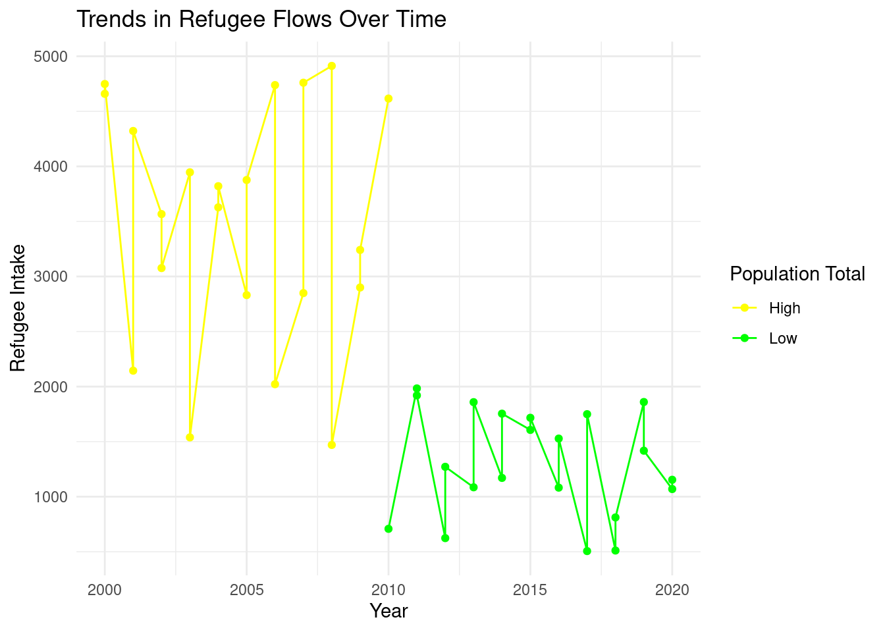

Migration Realities: Understanding Refugee Flows Amidst Global Socio-Economic Dynamics
Understanding Global Refugee Distribution
In today’s world, millions of people are displaced from their homes due to conflict, persecution, and environmental disasters. The map below provides a snapshot of this global challenge, showcasing the distribution of refugees across different countries and regions. Each shaded area represents the magnitude of displaced populations, offering insights into the scale and complexity of the issue. From war-torn regions to those ravaged by natural calamities, the map highlights the diverse contexts driving migration. Understanding this distribution is crucial for policymakers, aid organizations, and communities as they work to address the needs of displaced individuals and facilitate their integration into new societies. Through collaboration, empathy, and effective policies, we can strive to create a world where all people have the opportunity to live in safety and dignity, regardless of their circumstances.
Refugee Intake in Diverse Nations

In a world shaped by migration and displacement, understanding the dynamics of refugee intake across nations is crucial. To shed light on this complex issue, we’ve delved into data encompassing various countries. We began by filtering out countries without available data on life expectancy at birth, ensuring a robust analysis based on comprehensive information. With this refined dataset in hand, we embarked on a randomized journey, selecting a diverse array of ten nations. Each chosen for its unique context and role in the global refugee landscape, these countries offer a microcosm of the broader challenges and opportunities surrounding refugee intake. Our visualization paints a vivid picture of refugee intake across these selected nations. Through colorful bars, we see the varying degrees of support and accommodation provided to refugees in each country. From the bustling cities of developed nations to the resilient communities of emerging economies, the chart reflects the multifaceted response to the global refugee crisis. As we delve deeper into the data, we’re reminded of the humanity behind the numbers—each bar representing individuals seeking safety and opportunity in unfamiliar lands. This snapshot serves as a testament to the shared responsibility of nations in safeguarding the rights and dignity of refugees worldwide.
Economic Vitality, Refugee Inflow, and Health Expectations

In the vast landscape of global migration, economic prosperity often stands as a beacon, drawing individuals and families seeking refuge and opportunity. Today, armed with data and visualization tools, we embark on a journey to unravel the intricate relationship between economic indicators and refugee inflow across diverse nations. With our canvas set, we unleash the visualization magic, plotting GDP per capita against refugee intake. Each point on the scatterplot tells a story—an amalgamation of economic prowess and humanitarian response. The x-axis reflects the economic well-being of nations, while the y-axis captures the magnitude of their embrace toward displaced populations . But our narrative doesn’t end there. Adding a splash of color, we overlay the scatterplot with markers depicting life expectancy at birth. Through hues of blue, green, and red, we illuminate the health expectations prevalent in each economic landscape. From developed nations with high life expectancies to struggling economies grappling with health disparities, the colors paint a vivid picture of societal well-being. As we navigate through this visual tapestry, we are reminded of the profound implications of our findings. Economic prosperity, while a magnet for many, does not guarantee equitable access to resources or opportunities. Refugee influx, often driven by geopolitical unrest or environmental crises, underscores the interconnectedness of our global community. In our quest for a more just and compassionate world, this exploration serves as a beacon of hope—a call to action to bridge divides, foster empathy, and build resilient societies where prosperity and refuge are not exclusive privileges, but universal rights for all.
Exploring Refugee Flows Amidst Population Dynamics

In the tapestry of human migration, time stands as both witness and storyteller, weaving narratives of resilience and adaptation. Armed with data and visualization tools, we embark on a temporal expedition to unravel the intricate trends in refugee flows amidst shifting population dynamics. nOur journey begins with a canvas of randomized data—a mosaic of years spanning from 2000 to 2020, each etched with the contours of refugee intake. As we traverse the temporal landscape, our eyes are drawn to the undulating lines that chart the ebbs and flows of refugee numbers over the years. Each data point, a testament to the resilience of displaced communities, speaks volumes of their tenacity in the face of adversity. But the story doesn’t end there. Intertwined with the fabric of time, we encounter a colorful tapestry of population dynamics. Through hues of yellow and green, we illuminate the contrasting realities of high and low population regions, each leaving its indelible mark on the trajectory of refugee flows. In this visual odyssey, we are reminded of the intricate interplay between demographics and displacement. From bustling urban centers to remote hinterlands, each population shift shapes the contours of refuge, offering glimpses into the human spirit’s boundless capacity for adaptation and hope. As we conclude our journey, we emerge with a deeper understanding of the complex rhythms that govern our shared humanity. Through data-driven exploration, we transcend borders and barriers, forging connections that bridge the past, present, and future of global migration.